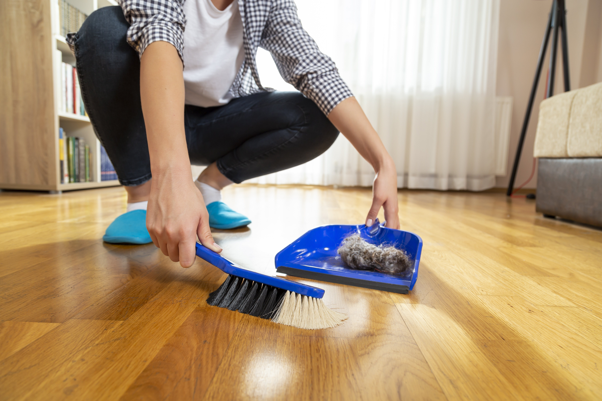

Your home can look spotless while dust-mite allergens remain on bedding, rugs, upholstery and other soft surfaces. Here’s the extra step I added to my routine.
I assumed that if my home looked clean, I had done everything I could about dust allergens. I washed my bedding. Vacuumed the rugs. Ran an air purifier.
But I’d still wake up congested and sneezing.
I thought I must not have been doing enough. I started washing everything extra hot. I spent almost $500 on a HEPA vacuum cleaner. I let go of some of the favorite pieces in the house and replaced them with “easier to clean” alternatives that left it feeling less like home.
I'd have a good week here and there, but the allergies always crept back. That's when I went down a rabbit hole trying to understand what dust-mite allergens actually are, and where they hide once you can't see them anymore.
It turns out, cleaning and allergen neutralization aren’t exactly the same thing. Dust-mite allergens can remain on soft surfaces even after thorough cleaning and removing all the dust you can see.
Residual Allergens Are Left Behind Even After You Clean

The major allergens associated with dust-mites are proteins called Der p 1 and Der p 2. Der p 1 comes from the gut of dust-mites, and finds its way into our homes through their fecal pellets. Der p 2 comes from the mites’ body components and is more heat-resistant, so it isn’t completely eliminated by standard washing in hot water.
These particles can be left behind after vacuuming and laundering, and become airborne when we touch soft surfaces. That meant my sniffles, skin irritation and brain fog would improve after cleaning but never really go away.
What Helped Me
What helped me was adding a product to neutralize the invisible allergens left behind after my cleaning routine: this Dust Allergen Neutralizing Spray. I just spray it on soft surfaces as a last step after my usual cleaning, and top up every couple of days.
The way it works is pretty simple: the spray uses receptors that bind specifically to Der p 1 and Der p 2, making it undetectable to your immune system. It also doesn't react with anything else, so it's fine around pets and kids. It comes in a Natural option and a Floral Breeze scent if you want something with a bit of fragrance.
The 4-Step Cleaning Routine I Use Now
- Wash bedding, pillowcases and throws regularly.
- Vacuum rugs, carpets and upholstery.
- Use an air purifier and keep indoor humidity controlled (moisture in the air lets dust-mites thrive!).
- Target what cleaning can leave behind: After cleaning, mist high-contact soft surfaces with Pacagen Dust Allergen Neutralizing Spray to help neutralize it.
Bottom Line: A home can look spotless and still contain dust-mite allergens. Cleaning helps—but it doesn't necessarily address every allergen left behind on soft surfaces.
For me, the missing step was targeting those. If you've been cleaning constantly but still feel like dust allergies are winning, this is one extra step worth looking into. Let me know what you think!
References
- Arlian, L G et al. “Reducing relative humidity is a practical way to control dust mites and their allergens in homes in temperate climates.” The Journal of allergy and clinical immunology vol. 107,1 (2001): 99-104. doi:10.1067/mai.2001.112119
- Kalsheker, N A et al. “The house dust mite allergen Der p1 catalytically inactivates alpha 1-antitrypsin by specific reactive centre loop cleavage: a mechanism that promotes airway inflammation and asthma.” Biochemical and biophysical research communications vol. 221,1 (1996): 59-61. doi:10.1006/bbrc.1996.0544
- Kauffman, Henk F et al. “House dust mite major allergens Der p 1 and Der p 5 activate human airway-derived epithelial cells by protease-dependent and protease-independent mechanisms.” Clinical and molecular allergy : CMA vol. 4 5. 28 Mar. 2006, doi:10.1186/1476-7961-4-5